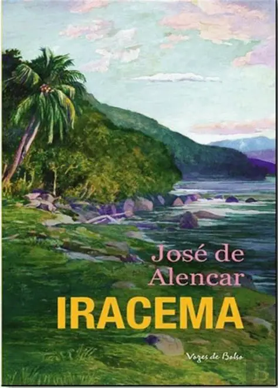

Dom Casmurro
Machado de Assis explora ciúme, memória e dúvida em uma das obras mais estudadas nos vestibulares.
Leia Mais

Machado de Assis explora ciúme, memória e dúvida em uma das obras mais estudadas nos vestibulares.
Leia Mais
José de Alencar retrata o encontro entre culturas e o nascimento simbólico do Brasil.
Leia Mais
Graciliano Ramos descreve a luta de uma família sertaneja contra a seca e a miséria.
Leia Mais